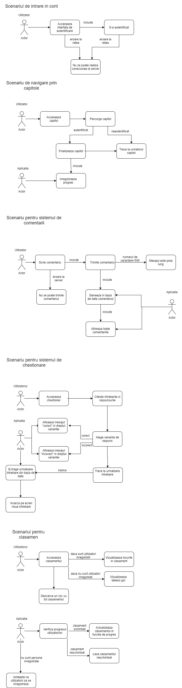

Afiliere
-
Universitatea Alexandru Ioan Cuza,
Facultatea de informatica
—
Satrada Generala Henri Mathias Berthelot,
Iasi,
Roamania

Note finale
-
Site-ul este un proiect realizat de catre doi studenti de la Facultatea de Informatica din Iasi.
-
Toate cunostintele necesare realizarii site-ului sunt luate din cursuri, laboratoare si surse de pe internet. Cateva dintre referinte sunt atasate chiar mai sus.
-
Ultima actualizare a ghidului:duminica 07.06.2020.